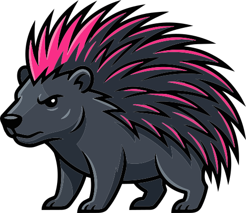

plot
Shape work, inspect the repo, draft/refine contracts.
`punk` is a local-first runtime for AI-driven engineering work across repositories.

Shape work, inspect the repo, draft/refine contracts.
Execute bounded changes in isolated VCS context.
Verify, decide, and produce proof.